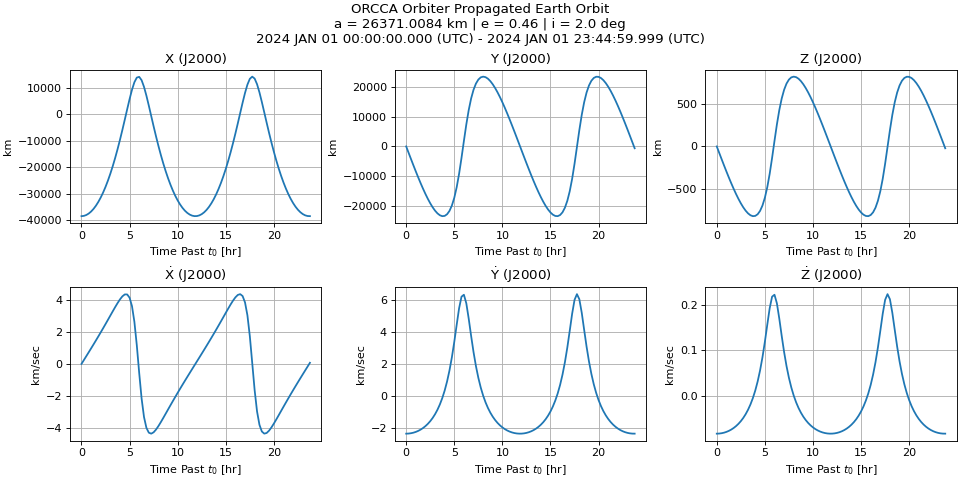

Scarabaeus Quickstart#
Example#
The example below propagates a spacecraft in a medium Earth orbit for one day using a two-body gravity model. It covers the core Scarabaeus workflow: units, frames, SPICE kernels, spacecraft definition, force model, and propagation.
import scarabaeus as scb
import numpy as np
import matplotlib.pyplot as plt
## setup
# define units and frame
kg, km, sec, hr = scb.Units.get_units(['kg', 'km', 'sec', 'hr'])
J2000 = scb.Frame('J2000')
# load SPICE kernels
scb.SpiceManager.load_kernel_from_mkfile('quickstart_mk.tm')
# define spacecraft
sc = scb.Spacecraft(name = 'ORCCA Orbiter',
spice_id = -123,
tot_mass = scb.ArrayWUnits(2000.0, kg),
area = scb.ArrayWUnits(1e-6, km**2),
ref_coeff = 1.5)
## define initial state
# central body
earth = scb.CelestialBody.from_constants('EARTH')
# compute components
a = earth.mean_radius + scb.ArrayWUnits(20e3, km) # 20,000 km altitude
GM = earth.grav_param.values
e, i, RAAN = 0.46, np.deg2rad(2), np.deg2rad(0.0)
v_circ = np.sqrt((GM / a.values) * ((1 - e) / (1 + e)))
# position
r0 = scb.ArrayWFrame(array = [-a.values * (1 + e) * np.cos(RAAN),
-a.values * (1 + e) * np.sin(RAAN),
0],
units_or_frame = km,
frame = J2000)
# velocity
v0 = scb.ArrayWFrame(array = [v_circ * np.sin(RAAN) * np.cos(i),
-v_circ * np.cos(RAAN) * np.cos(i),
-v_circ * np.sin(i)],
units_or_frame = km / sec,
frame = J2000)
# define state at start epoch
start_epoch = scb.EpochArray('2024-JAN-01 00:00:00.000', sys = 'UTC')
x0 = scb.StateArray(epoch = start_epoch,
origin = earth,
state = scb.StateDefinition()
.position(sc, r0)
.velocity(sc, v0))
## propagate
# propagate for a day with 15 minute timestep
epochs = scb.EpochArray.interval(start = start_epoch,
end = start_epoch + scb.ArrayWUnits(24, hr),
dt = scb.ArrayWUnits(0.25, hr))
# use only point mass for dynamics
prop = scb.Propagator(primary_body = sc,
state_vector = x0,
tspan = epochs,
force_models = scb.ForceModelTranslation(sc))
prop.propagate()
## examine propagation
# create figure and labels
fig, axes = plt.subplots(2, 3, figsize = (12, 6), constrained_layout = True)
comp_lbls = ['X', 'Y', 'Z',
r'$\mathrm{\dot{X}}$', r'$\mathrm{\dot{Y}}$', r'$\mathrm{\dot{Z}}$']
prop_times = (epochs - epochs[0]).convert_to(hr) # want as hours past t0
# plot each state component
for ax, comp, lbl, in zip(axes.flatten(), prop.state.quantity.T, comp_lbls):
ax.plot(prop_times, comp.values, lw = 1.6)
# formatting
ax.set_xlabel(r'Time Past $t_0$ [hr]')
ax.set_ylabel(comp.units)
ax.grid(), ax.set_title(lbl + ' (J2000)')
fig.suptitle((f'{sc.name} Propagated Earth Orbit\n'
f'a = {a} | e = {e} | i = {np.rad2deg(i)} deg\n'
f"{epochs[0].to(rep = 'CAL')} - {epochs[-1].to(rep = 'CAL')}"))
plt.show()

Note
The metakernel used in the above code, quickstart_mk.tm, is provided in the
dropdown below. It only contains a leapsecond kernel (from NAIF at naif0012.tls), as that is all that is required for
the quickstart. If you require more kernels, add them to this one or provide the path
to a new metakernel.
View quickstart_mk.tm
KPL/MK
\begindata
KERNELS_TO_LOAD = (
'naif0012.tls'
)
\begintext
Next Steps#
The tutorial suite in Examples walks through progressively more complex workflows:
Basics — units, epochs, frames, spacecraft definition, Keplerian propagation
Intermediate — perturbation models, mission sequences, measurement simulation
Advanced — orbit determination with simulated and real DSN measurements, multi-arc OD, finite burn modelling, parameter estimation
See the API Reference for full documentation of every class and method.